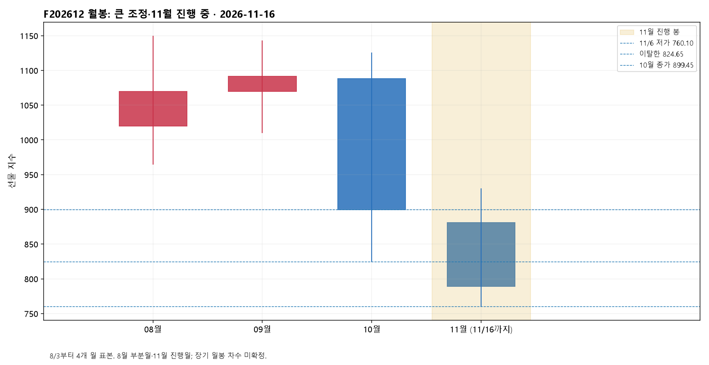
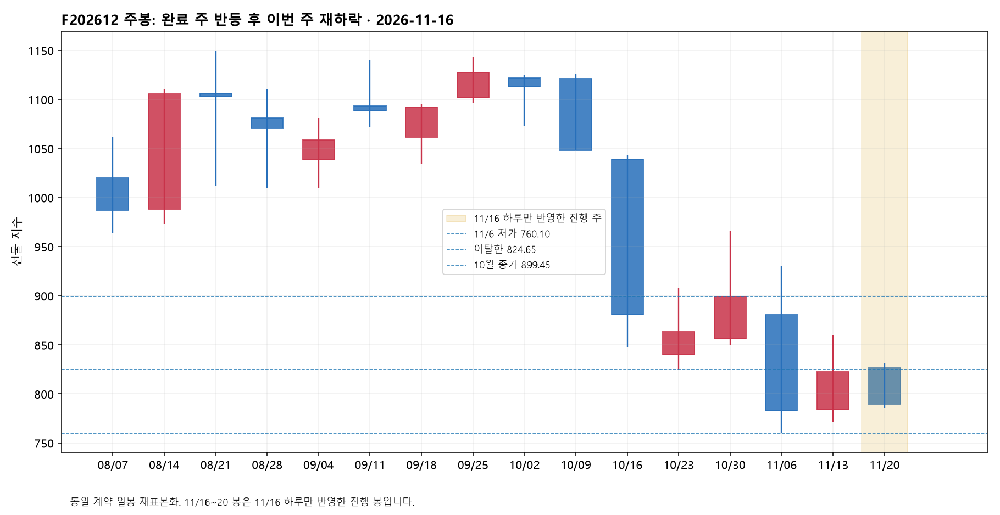
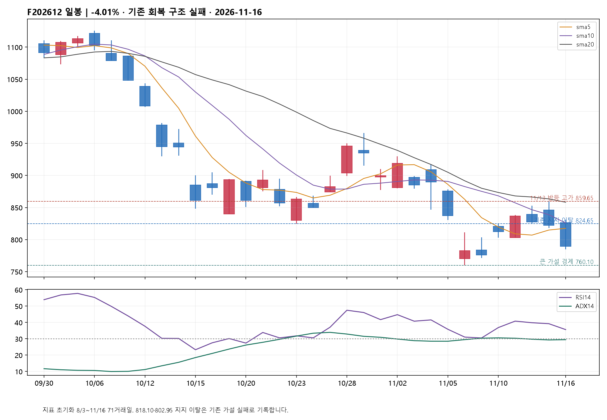
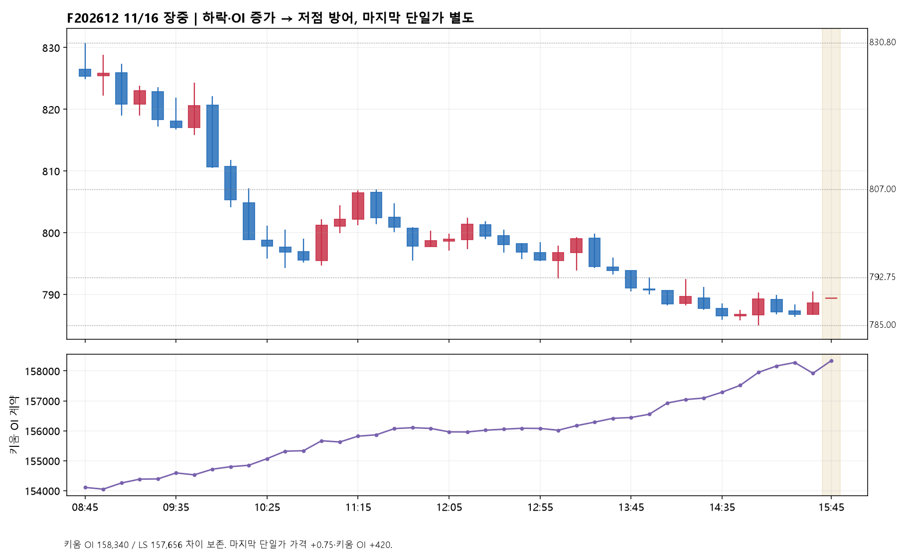
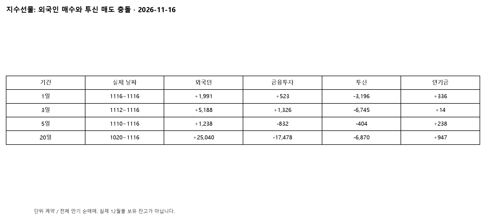
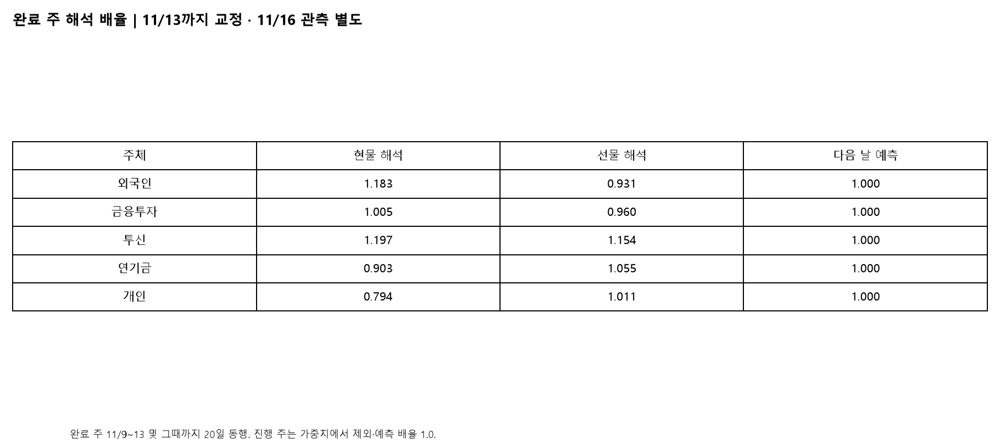
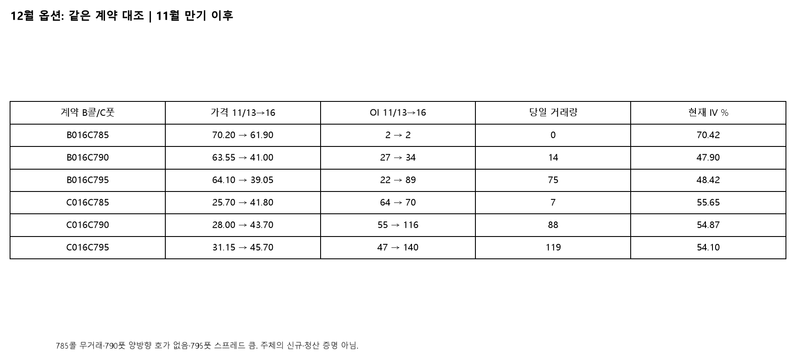

F202612 / A016C000 · 정규장 789.35 · 키움 OI 158,340 / LS 157,656 · 이후 야간 미반영
11/16 정규장 F202612는 789.35(-33.00, -4.01%)로 마감했습니다. 일봉·10분봉은 약세이며, 11/9~13 완료 주의 반등과 이번 주 첫날 급락이 충돌합니다. 당장 785.00을 지키는지, 반등 시 790.50~792.75를 10분봉 종가로 회복하고 눌림에서 지지하는지가 첫 조건입니다. 그 전에는 저점 부근 방어를 상승 추세 전환으로 보지 않습니다. 802.95~807.00 회복·재지지, 이어 818.10~824.65 일봉 회복이 있어야 약세 해석을 단계적으로 낮출 수 있습니다. 785.00을 10분봉 종가로 이탈하고 반등이 막히면 771.55, 이후 760.10을 확인합니다. 이는 확정 목표가가 아니라 이전 실제 저점에 대한 다음 확인 순서입니다.
직전 보고서의 818.10 지지와 하위 802.95~803.20 회복 구조가 모두 무너졌습니다. 기존 단기 회복 가설은 실패했으며, 오늘 저점 785.00을 새로 잡아 기존 가설이 유지됐다고 표현하지 않습니다. 선호 가설은 11/6 저가 760.10에서 11/13 고가 859.65까지의 반등이 큰 하락 안의 교정 반등이고, 오늘부터 재차 하락 구간에 들어왔다는 것입니다. 대안은 760.10을 지키는 더 큰 바닥 형성 과정에서 깊은 되돌림이 진행 중이라는 것입니다. 하위파 세분이 부족해 3파·5파 또는 A/B/C 차수는 확정하지 않습니다. 785.00 유지·792.75 회복은 단기 방어 확인일 뿐이며, 807.00과 824.65의 순차 회복이 대안의 설득력을 높입니다. 830.80을 일봉 종가로 넘기고 재지지하면 오늘 하락 지속 가설은 약화되고 838.20·859.65가 다음 확인값입니다. 760.10 아래 일봉 종가와 반등 재저항이면 큰 바닥 대안도 철회합니다.
오늘 지수선물 순매매는 외국인 +1,991계약, 금융투자 +523, 투신 -3,196, 연기금등 +336입니다. 기관계 -2,121은 세부 주체와 중복 합산하지 않습니다. 외국인·금융투자·연기금이 순매수 반대편을 맡았지만 가격은 저가 가까이 마감했으므로 매수 확산보다 방어·흡수 성격으로 읽는 쪽이 현재 가격 반응에 맞습니다. 신규 롱인지 환매수인지, 투신 매도가 신규 숏인지 기존 롱 청산인지는 주체별 개설·청산 자료가 없어 확정하지 않습니다. 최근 3일(11/12·13·16) 외국인 +5,188 대 투신 -6,745, 5일(11/10~16) +1,238 대 -404, 20일(10/20~11/16) +25,040 대 -6,870계약입니다. 누적 외국인 매수가 당일 상승으로 이어지지 않는다는 점이 중요합니다. 3일 가격은 -47.20포인트지만 5일은 +13.50, 20일은 -103.90으로 기간별 해석도 다릅니다.
지수선물 외국인 매수와 달리 현물에서는 외국인·투신·연기금이 순매도, 금융투자·개인이 순매수였습니다. 주식선물 외국인도 -160,987계약으로 지수선물과 반대입니다. 여러 종목·승수가 섞인 주식선물 계약 수를 지수선물 수량과 더하지 않습니다. 현물 매도와 지수선물 매수는 위험노출 조정·헤지 또는 상대가치 거래로도 설명할 수 있어 외국인 전체가 상방으로 전환했다고 보지 않습니다. 프로그램은 총계·차익·비차익이 모두 순매도이며, 3일·20일 누적도 순매도지만 5일은 순매수여서 최근 매도 재강화가 누적 반등 흐름과 충돌합니다. 시장 베이시스는 789.35-791.56=-2.21, LS 이론 베이시스 +1.48 대비 -3.69입니다. 현물 15:30과 선물 15:45 종가의 비동시 비교이므로 즉시 실행 가능한 차익거래 수익으로 해석하지 않습니다.
08:45→12:05 가격은 825.35→798.95(-26.40), 키움 OI는 +1,854계약이었고, 12:05→15:25는 798.95→788.60(-10.35), OI +1,956이었습니다. 하락 중 미결제가 늘어난 경로는 신규 위험이 쌓이는 매도 우세 국면과 부합하며 단순 롱 청산만으로 하루를 설명하기 어렵습니다. 그러나 새 계약에는 매수·매도 상대가 함께 있으므로 특정 주체 신규 숏의 증명은 아닙니다. 14:05→15:25는 가격 +0.15·OI +993으로 하락 지속이 아니라 저점 부근 양방향 구축에 가까웠고, 15:25→15:45 단일가는 +0.75·OI +420으로 다소 회복했습니다. LS 투자자 업데이트에서 외국인은 10:00 +633, 14:45 -595, 15:45 -584였지만 16:06 +1,620, 최종 +1,991로 바뀌었고 투신은 +73에서 -3,196으로 정리됐습니다. 이는 공급자의 누적 갱신시각이며 실제 체결시각이 아닙니다. 장 마감 후 수급 정정을 16시 신규 매매나 가격 반등 원인으로 붙이지 않습니다.
현재 OI는 주 원천 키움 opt50062 158,340계약, LS t2111/t2214 157,656계약으로 684계약 차이가 있습니다. 전일 OI도 당일 보존 키움 154,294와 오늘 재조회 154,085가 209계약 다릅니다. 키움 오늘 조회 시계열끼리 비교하면 +4,255, 보존 전일 스냅샷과 비교하면 +4,046, LS 동일 원천 일별로는 +3,571입니다. 세 계산 모두 증가 방향이지만 정확한 증가량과 정정·집계 범위의 원인은 미해결입니다. 기존 원본을 보존하고 세 산식을 분리했습니다. 3월물은 별도로 가격 779.90, OI 6,305, 전일 대비 +12, 거래량 58계약이며 12월물과 잔고를 합산하지 않습니다. 근월·차월 자료만으로 주체별 롤오버 수량을 특정할 수 없습니다.
외국인 옵션 수급은 전체 만기 기준 콜 -3,809계약·-26억원, 풋 +2,381계약·+30억원입니다. 지수선물 순매수와 달리 옵션 흐름은 하방 방어 또는 하방 지향 해석과 부합합니다. 12월 동일 계약을 11/13→16 비교하면 790콜 가격 63.55→41.00, OI 27→34(+7), IV 48.16→47.90%인 반면 790풋은 28.00→43.70, OI 55→116(+61), IV 49.26→54.87%입니다. 795풋도 31.15→45.70, OI 47→140(+93), IV 50.58→54.10%입니다. 풋의 가격·OI·IV 동반 상승은 하방 수요 확인에 유용하나 총 OI로 외국인 신규 풋 매수를 입증하지 않습니다. 790풋 양방향 호가가 없고 795풋 스프레드가 넓으며 785콜은 당일 무거래여서 체결 강도·정확한 스큐·차익을 확정하지 않습니다. 16:30 그릭스는 사후 평가값입니다. 790콜 델타 +0.5377, 790풋 -0.4612를 표시하되 당일 투자자별 델타 조정 순수급이나 딜러 감마로 환산하지 않습니다.
11월 월물 옵션 만기는 11/12에 종료됐고 오늘은 그 뒤 두 번째 정규 거래일입니다. 지금 월물 옵션은 12월(12/10 만기)과 1월을 구분했으며, 12월 선물 만기도 12/10입니다. 공식 명세의 월요일 위클리 만기와 12월 월물 계약을 혼합하지 않습니다. 이번 분석은 월물 체인 조회이며 오늘 위클리 계약별 청산 내역은 확보하지 못했습니다. 11/12 전후 전체 옵션 3·5·20일 순매매는 거래 활동 비교일 뿐 새 12월 잔존 포지션 누적이 아닙니다. 만기 후에도 현물·투신 매도, 약한 가격 반응이 이어졌다는 점을 확인하되 특정 청산·헤지 의도를 단정하지 않습니다. 다음 세션은 현물 매도 완화, 투신 매도 축소, 가격의 792.75→807.00 회복이 함께 나타나는지 확인합니다.
완료 주 11/9~13과 그 시점까지의 20거래일로 계산한 제한적 해석 배율은 현물 외국인 1.183·투신 1.197, 선물 외국인 0.931·투신 1.154입니다. 이번 주 월요일을 완료 주 가중치에 끼워 넣지 않았습니다. 최근 관측에서는 외국인 선물 매수 자체보다 현물 외국인·투신 방향과 가격 반응을 더 주의 깊게 읽을 근거가 있지만, 시장 영향의 인과 비중을 측정한 값은 아닙니다. 10/12~11/16 26거래일에서 외국인·투신 현물 동반 매수·상승 후 다음 날 상승은 3/7(42.9%), 동반 매도·하락 후 하락은 5/11(45.5%)이며 같은 기간 단순 하락 후 하락 기준선은 8/15(53.3%)입니다. 선물은 각각 1/3, 0/2로 소표본입니다. 오늘 현물 사건의 다음 날 결과는 대기이며 분모에서 제외했습니다. 다음 날 예측 배율은 모두 1.0이고 이 적중률을 내일 확률로 사용하지 않습니다.
개별 F202612 가격 분석은 거래량이 있는 8/3~11/16의 71일봉, 장중은 키움 검증 분봉·OI를 사용했습니다. 월봉·주봉은 같은 일봉 재표본화이며 8월은 부분월, 11월과 11/16~20 주는 진행 봉입니다. 9/11~11/16의 43거래일 LS 전체 만기 선물 관찰 누적은 외국인 +28,952, 금융투자 -15,727, 투신 -9,161, 연기금 +1,206계약입니다. 이는 12월 관찰기간의 전체 만기 순매매 합이지 실제 12월 잔고·평균단가가 아닙니다. 기존 장부와 LS의 겹치는 날짜 차이는 별도 보존했으며 혼합하지 않았습니다. 20일 가격 하락에도 외국인 선물 순매수가 누적되는 괴리를 유지해서 해석합니다.
현물 보조 확인은 KOSPI 5,100.50(-3.59%), KOSPI200 791.56(-4.03%)입니다. KOSPI 상승 263·하락 615·보합 34종목으로 하락이 우세하고, KOSPI200도 상승 85·하락 110·보합 6입니다. 삼성전자 -4.27%, SK하이닉스 -6.99%와 두 종목 프로그램 순매도는 대형 반도체의 약세를 확인해 줍니다. 다만 종목별 프로그램 금액과 전체 프로그램 필드의 단위가 같다고 검증하지 못했으므로 둘을 빼서 나머지 시장 수급을 만들지 않았고, 정확한 지수 기여도·외국인 비주도주 순매매는 미확보입니다. 보존된 해외·국내 다중 시간대 보조 파일은 11/12 등 과거 기준일이라 오늘 확인값으로 사용하지 않았습니다.

11월 진행 종가 789.35는 10월 완료 종가 899.45 아래입니다.

11/9~13 완료 주 +5.03%, 이번 주 첫날 -4.01%로 반등을 되돌렸습니다.

직전 보고서의 818.10 지지와 하위 802.95~803.20 회복 구조가 모두 무너졌습니다. 기존 단기 회복 가설은 실패했으며, 오늘 저점 785.00을 새로 잡아 기존 가설이 유지됐다고 표현하지 않습니다. 선호 가설은 11/6 저가 760.10에서 11/13 고가 859.65까지의 반등이 큰 하락 안의 교정 반등이고, 오늘부터 재차 하락 구간에 들어왔다는 것입니다. 대안은 760.10을 지키는 더 큰 바닥 형성 과정에서 깊은 되돌림이 진행 중이라는 것입니다. 하위파 세분이 부족해 3파·5파 또는 A/B/C 차수는 확정하지 않습니다. 785.00 유지·792.75 회복은 단기 방어 확인일 뿐이며, 807.00과 824.65의 순차 회복이 대안의 설득력을 높입니다. 830.80을 일봉 종가로 넘기고 재지지하면 오늘 하락 지속 가설은 약화되고 838.20·859.65가 다음 확인값입니다. 760.10 아래 일봉 종가와 반등 재저항이면 큰 바닥 대안도 철회합니다.

08:45→12:05 가격은 825.35→798.95(-26.40), 키움 OI는 +1,854계약이었고, 12:05→15:25는 798.95→788.60(-10.35), OI +1,956이었습니다. 하락 중 미결제가 늘어난 경로는 신규 위험이 쌓이는 매도 우세 국면과 부합하며 단순 롱 청산만으로 하루를 설명하기 어렵습니다. 그러나 새 계약에는 매수·매도 상대가 함께 있으므로 특정 주체 신규 숏의 증명은 아닙니다. 14:05→15:25는 가격 +0.15·OI +993으로 하락 지속이 아니라 저점 부근 양방향 구축에 가까웠고, 15:25→15:45 단일가는 +0.75·OI +420으로 다소 회복했습니다. LS 투자자 업데이트에서 외국인은 10:00 +633, 14:45 -595, 15:45 -584였지만 16:06 +1,620, 최종 +1,991로 바뀌었고 투신은 +73에서 -3,196으로 정리됐습니다. 이는 공급자의 누적 갱신시각이며 실제 체결시각이 아닙니다. 장 마감 후 수급 정정을 16시 신규 매매나 가격 반등 원인으로 붙이지 않습니다.

오늘 지수선물 순매매는 외국인 +1,991계약, 금융투자 +523, 투신 -3,196, 연기금등 +336입니다. 기관계 -2,121은 세부 주체와 중복 합산하지 않습니다. 외국인·금융투자·연기금이 순매수 반대편을 맡았지만 가격은 저가 가까이 마감했으므로 매수 확산보다 방어·흡수 성격으로 읽는 쪽이 현재 가격 반응에 맞습니다. 신규 롱인지 환매수인지, 투신 매도가 신규 숏인지 기존 롱 청산인지는 주체별 개설·청산 자료가 없어 확정하지 않습니다. 최근 3일(11/12·13·16) 외국인 +5,188 대 투신 -6,745, 5일(11/10~16) +1,238 대 -404, 20일(10/20~11/16) +25,040 대 -6,870계약입니다. 누적 외국인 매수가 당일 상승으로 이어지지 않는다는 점이 중요합니다. 3일 가격은 -47.20포인트지만 5일은 +13.50, 20일은 -103.90으로 기간별 해석도 다릅니다.

완료 주 11/9~13과 그 시점까지의 20거래일로 계산한 제한적 해석 배율은 현물 외국인 1.183·투신 1.197, 선물 외국인 0.931·투신 1.154입니다. 이번 주 월요일을 완료 주 가중치에 끼워 넣지 않았습니다. 최근 관측에서는 외국인 선물 매수 자체보다 현물 외국인·투신 방향과 가격 반응을 더 주의 깊게 읽을 근거가 있지만, 시장 영향의 인과 비중을 측정한 값은 아닙니다. 10/12~11/16 26거래일에서 외국인·투신 현물 동반 매수·상승 후 다음 날 상승은 3/7(42.9%), 동반 매도·하락 후 하락은 5/11(45.5%)이며 같은 기간 단순 하락 후 하락 기준선은 8/15(53.3%)입니다. 선물은 각각 1/3, 0/2로 소표본입니다. 오늘 현물 사건의 다음 날 결과는 대기이며 분모에서 제외했습니다. 다음 날 예측 배율은 모두 1.0이고 이 적중률을 내일 확률로 사용하지 않습니다.

외국인 옵션 수급은 전체 만기 기준 콜 -3,809계약·-26억원, 풋 +2,381계약·+30억원입니다. 지수선물 순매수와 달리 옵션 흐름은 하방 방어 또는 하방 지향 해석과 부합합니다. 12월 동일 계약을 11/13→16 비교하면 790콜 가격 63.55→41.00, OI 27→34(+7), IV 48.16→47.90%인 반면 790풋은 28.00→43.70, OI 55→116(+61), IV 49.26→54.87%입니다. 795풋도 31.15→45.70, OI 47→140(+93), IV 50.58→54.10%입니다. 풋의 가격·OI·IV 동반 상승은 하방 수요 확인에 유용하나 총 OI로 외국인 신규 풋 매수를 입증하지 않습니다. 790풋 양방향 호가가 없고 795풋 스프레드가 넓으며 785콜은 당일 무거래여서 체결 강도·정확한 스큐·차익을 확정하지 않습니다. 16:30 그릭스는 사후 평가값입니다. 790콜 델타 +0.5377, 790풋 -0.4612를 표시하되 당일 투자자별 델타 조정 순수급이나 딜러 감마로 환산하지 않습니다.
작성 2026-11-16T17:19:09.802708+09:00 · 조건부 해설, 주문·비중 지시 아님